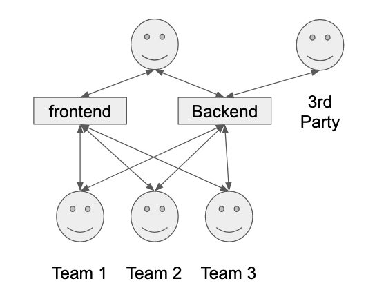

8. Backend APIs
Microservices
A Brief History of APIs and Service composition
Static HTML
Simple request response
- Just GET
- “Hello World”
- Can still run javascript
Dynamic HTML with Database
HTML contents rendered data in database
- HTML rendered based on database contents
- Lack of separation made a mess:
- All code runs in the browser
- Code could only be obfuscated, no secrets!
- No separation of Business logic and view
- SQL injection

Separation of Concerns
Model View Controller
- Simple pattern separating concerns:
- Model:
- Responsible for managing the data of the application.
- It receives user input from the controller.
- View:
- Presentation of the model in a particular format.
- Controller:
- Responds to the user input
- Performs interactions on the data model objects.

Application programming interface (API)
The classic frontend backend solution.
- More Separation of concerns
- Backend focuses on data
- Frontend on presentation
- Client (browser) handles both
- Replace the view with ex. REST
- Representational State Transfer (REST):
- HTTP protocol same as frontend
- Body in JSON, XML or other
- HTTP methods to view and change data
- Resources identified with URIs
Application programming interface (API)
- APIs can have multiple consumers
- Admin View
- User View
- System-to-system communication

It’s not Just About Users
How do we spread responsibility across a large monolithic (single piece) application?
- A lot of time wasted on synchronization
- Planning takes forever
- Which team has mandate to do what
- Functional responsibility (database, protocol) etc does not map to user features.
It’s not Just About Users
- Libraries for Commonly used Code
- Same lib used in different ways (inflexible)
- Creates coupling between unrelated features
- Conway’s Law
- Need to communicate to write software
- Communication boundaries between teams
- Software architecture should reflect Organizational Structure
It’s not Just About Users
Service Oriented Architecture (SOA)
Many small services, one Team Per Service
- Small focused services
- Team responsible for entire service
- Frontend and Backend (API)
- Provides support to other teams
- Also responsible for deployment and operations of the service (DevOps)
- Great for Large organisations
- Pioneered at Amazon
- 1 (American sized) pizza team
- Great for Large organisations
- You’re not amazon - Can you afford team per service?
Service Oriented Architecture (SOA)

Microservices and Service Discovery
Provide business needs (bounded domains) using a collection of small services with a clear responsibility.
- API gateway or Load Balancer in front
- Presents a single solution hiding services
- Host or Path mapping to services (/email)
- May provides authentication and authorization to services
- Enables horizontal scaling
- Add additional service instances
- Add additional compute nodes
- Services register with service discovery so other services can find them
- Looks like “a single” API from the gateway
Microservices and Service Discovery